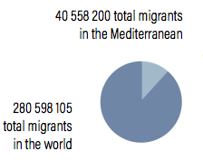

Europe has led a wave of right wing populism and the implementation of stringent anti-immigration policies at the expense of the well-being of migrants and asylum seekers. Far right groups claim that an overwhelming "invasive" number of migrants come to Europe through the Mediterranean.
In mid-year 2020, the International Organization for Migration documented that 14.45% of the world's migrants went to the Mediterranean.

Urbanization, the growth of a city, is inherently linked to human migration. While fertility rates contribute to a city's population growth, migration - both internal and international - drives urbanization.
A closer look at this topic is important to ensure that cities and metropolitan areas have the necessary infrastructure and services to welcome new residents.
The Mediterranean has received particular attention as it is spoken about as a 'point of entry' to the continent. Far right movements have capilized on citizens' frustrations regarding high unemployment rates and stagnant economies to periodically close their borders to asylum seekers.